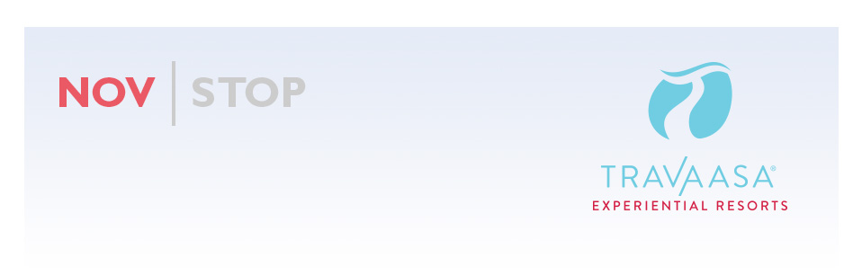
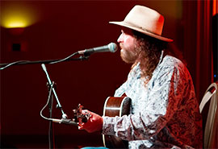
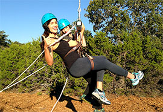
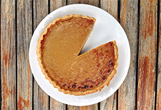

XXXXXXFIRSTPARAGRAPHXXXXXXXX EXAMPLELINK XXXXXXXXXXXXXXXXX
XXXXXXXXXXSECONDPARAGRAPH
XXXXXXXXXXTHIRDPARAGRAPH
XXXXXXXXXXSIGNOFF
THIS MONTH |
|
Travaasa Austin is proud to announce the second annual Farm to Table Harvest Dinner! The popular event will be held at the recently opened Eleven XI in Montrose, Texas on Sunday, November 17th. Talented chefs from around the state will join Executive Chef Ben Baker to prepare a multi-course menu with all proceeds from ticket sales benefiting Urban Harvest. more |
|
Addicted to pumpkin spice lattes? Too many items on your to-do list? Fear not, our experts have the answers for maintaining a healthy balance during the ever stressful holiday season. Submit your own holiday problems and you’ll be entered to win a weekend escape to Travaasa for Vitality Month. We’ll also be giving away gift cards each week. Sweepstakes begins November 11th. Get ready for a dose of holiday advice! more |
|
We’re extremely excited to have Chef Derek Watanabe as executive chef at Travaasa Hana. Born and raised in Honolulu and specializing in regional cuisine, he also draws inspiration from his cooking experiences around the globe. His passion for sustainability and cooking with a sense of place aligns perfectly with Travaasa’s commitment to providing authentic experiences for our guests. To get a taste of what’s to come from Chef Derek, try his Smoked Kalua Pig recipe. more |
|  |
The Travaasa Austin family was recently honored the opportunity to host a Mike Beck Concert and Dinner benefitting the Joyful Horse Project. The evening offered inspiring words about the program’s mission to bring together wounded warriors and rescued horses to help each other heal. Find out how you can support the Joyful Horse Project and our servicemen and women in honor of Veterans Day, November 11th. more |
|  |
There’s just something about a swing that makes everyone feel like a kid again. Now, at Travaasa Austin, you can play on an adult version of this old favorite on our challenge course. Strap in and hold on as you’re hoisted 35 feet in the air. Pull the cord and off you go. Check out this GoPro video for a virtual ride. more |
|  |
No canned pumpkins were harmed in the making of pie. Here at Travaasa, we are all about fresh ingredients and experimenting in the kitchen. What is our favorite fun take on the classic dish? Fresh butternut squash! Get Chef Ben’s secret pie recipe here… (Shhh! Seriously, it’s a secret.) more |
“This is Texas, all the way. I was Travaasa for a Conference, and every single detail was attended to with the utmost care. The staff was amazingly attentive and caring, the resort is stunning, and the food is outstanding. If you get an opportunity to experience Travaasa, take it!” - Deidra R, traveled solo |
ON THE HORIZON
Joyous Holidays
While the holidays sometimes have a tendency to overwhelm us, the holiday season also brings an incredible amount of joy as we are surrounded by family and friends and relishing in the company of loved ones during such a special time of year.
At Travaasa, we’ve named December “Joy Month” in honor of the celebration that surround the holiday season. With so many opportunities to harness the magic, Travaasa is the perfect place to spend the holidays with the ones you love.
Jump-start the New Year with Vitality Month
During the month of January, Travaasa is focusing on the vibrancy that comes with the New Year by creating a series of classes and programming dedicated to personal growth and energizing the mind and body. With some fabulous new spa treatments, private life coaching sessions by Josh Krilov and New Year’s Eve celebrations you won’t forget, January looks like a promising month of renewed energy and an inspirational start to the New Year.
|
|